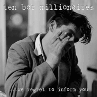

Ten Bob Millionaires - We Regret To Inform You (Album, 2017)
01 - Bad News Travels Fast (3:01)
02 - Lies A Dime A Dozen (1:55)
03 - Part Time Loser (2:24)
04 - Big Bad Noise (2:55)
05 - What Kinda Fool (Do You Take Me For) (2:17)
06 - Love For Free (2:13)
07 - Excuse Me Baby (While I Kiss You) (1:57)
08 - Ol' Muscle 'n' Blood (3:25)
09 - Hands Of Time (1:56)
10 - Blood On The Cobbles (2:40)
11 - Wrong (2:54)
12 - Screw 'n' Smash (1:54)
© Western Star Recording Company :: [WSRC 121]
Notes
Review
035/366 (Project 366)
Slightly Modern Rockabilly with clear influence of authentic Rock'n'Roll and general Pop, Rock, Folk/Country. I would like to highlight the scrumptious sound of most catchy tunes. Too good and mostly contemporary. Ten Bob Millionaires are quite charismatic musicians with huge enthusiasm and skills. This is especially noticeable in live performances, but the album featured it too. Boppin', rockin' and rollin', energetic country and punchy songs. Lead vocals pretty much affect the overall sound experience, makes the sound more special. Musical arrangements have much more classic patterns, but still with a high attitude and many attractive points. All songs sound in the same band style. And pretty balanced. Each one release that I shoudl to listen to so carefully to avoid completely wrong review.